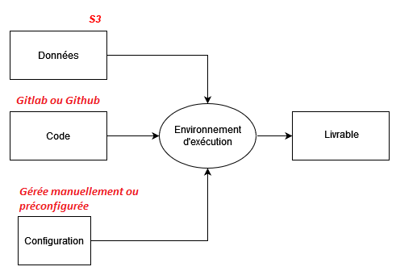

Funathon Presentation
And especially SSPCloud and Git
What is a Funathon?
A funathon is a special sort of event, halfway between a training session and a hackathon. It aims at giving statisticians an opportunity to learn and apply machine learning and IA methods in a collaborative and supportive environment. Over two days, participants will work in teams on end-to-end ML and AI projects provided by the organizers. Throughout the event, the organizing team will provide support to participants over Zoom whenever needed. All projects will be carried out on the (amazing) SSPCloud platform.
- 4 topics to explore different areas of data science
- Not a competition but step-by-step tutorials
- Feel free to try new things 😍
- “Immediate takeoff for data science”
- Theme: statistics on civil aviation
- Organization: WP6 and innovation teams from Insee
- Entry point : aiml4os.github.io/funathon-general-website

Last year’s resources
All of last year’s resources (“From field to plate”) can be found at inseefrlab.github.io/funathon2023/
An ideal environment for data analysis

Plus, SSP Cloud is amazing! 😍

A platform for best practices

- Temporary environments therefore:
- Store code in a permanent place:
Github,Gitlab - Store data in a permanent place:
MinIO
- Store code in a permanent place:
In the context of the Funathon


Note
Services last several days but are not meant to persist
Bonus
Statisticians who discovered SSPCloud, when they have to go back to their usual infrastructure

Launch a ready-to-use service
- An example with (Dashboard)
- An example with
Python(Text analysis topic)

For the Python launch link
Don’t forget to replace the pre-filled repository URL in the Init tab with your own (the URL of your fork)
Workflow

- By default, the remote repository has the alias
origin
Demo 🚀
Example from topic 2
Demo 🚀
Example with Python (Text analysis topic)

The funathon is underway
- You can join the breakout rooms on Zoom by topic
- You can ask your questions on Tchap
The funathon is underway (support on break)
- The assistants also need a coffee break
The funathon is underway (lunch break)
- Don’t forget to eat